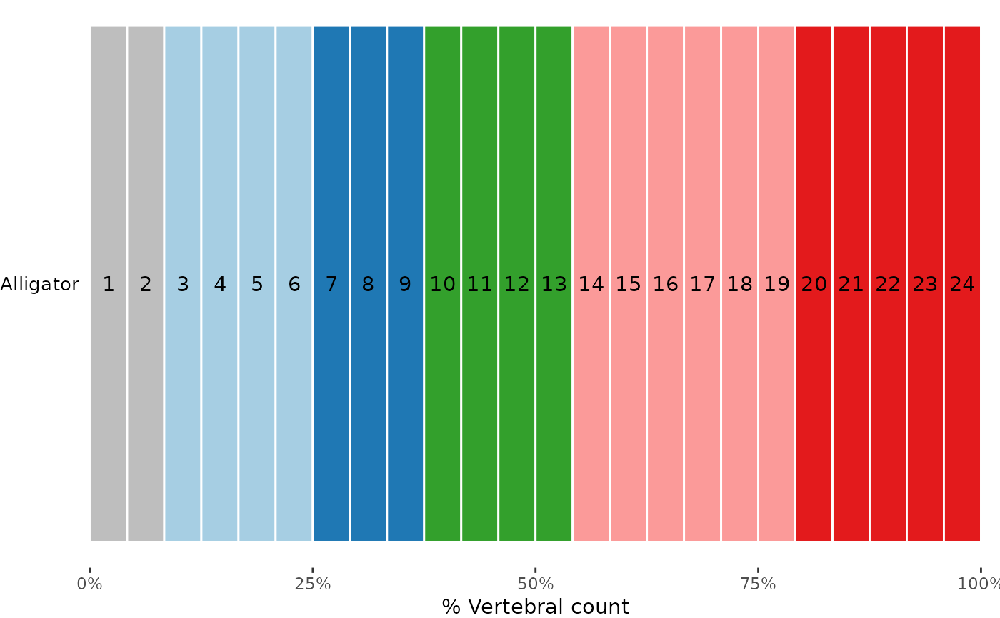

plotvertmap() plots a map of the supplied vertebrae, optionally adding colors, marks, and text to identify existing and estimated features of the vertebrae.
Usage
plotvertmap(
x,
type = "count",
bps = NULL,
modelsupport = NULL,
criterion = "aic",
model = 1,
bpvar = NULL,
bp.sd = NULL,
sd.col = "black",
dropNA = FALSE,
text = FALSE,
name = NULL,
centraL = NULL,
reg.lim = NULL,
lim.col = "black",
block.cols = NULL,
block.lim = NULL
)Arguments
- x
a
regions_data,regions_pco, orregions_simobject; the output of a call toprocess_measurements(),svdPCO(), orsimregions(), respectively.- type
string; the labeling of the x-axis of the plot. Either
"count"to identify the vertebra index (or absolute position whencentraLis supplied) or"percent"to identify the percent vertebra count (or percent total length whencentraLis supplied). Abbreviations allowed. Default is"count".- bps
an optional vector containing the region breakpoints. One of
bps,modelsupport, orbpvarshould be specified to display regions breakpoints. See Details.- modelsupport
an optional
regions_modelsupportobject; the output of a call tomodelsupport(). One ofbps,modelsupport, orbpvarshould be specified to display regions breakpoints. See Details.- criterion
string; the criterion to use to select the best model for which breakpoints are to be displayed when
modelsupportis specified. Ignored otherwise. Allowable options include"aic"to use the AICc and"bic"to use the BIC. Abbreviations allowed. Default is"aic".- model
numeric; from which model among the best as determined bycriterionshould breakpoints be selected whenmodelsupportis supplied. Ignored otherwise. 1 is the best model, 2 the second best, etc. Default is 1.- bpvar
an optional
regions_BPvarobject; the output of a call tocalcBPvar(). One ofbps,modelsupport, orbpvarshould be specified to display regions breakpoints. See Details.- bp.sd
an optional vector of the standard deviations of the breakpoints (e.g., as calculated by
calcBPvar()). Whenbpvaris supplied, the weighted standard deviations are used.- sd.col
when
bp.sdis specified, the color of the mark on plot indicating the standard deviations. Default is black.- dropNA
logical; when some vertebrae are missing, e.g., due to subsampling or starting the analysis at a vertebra beyond the first, whether to remove the missing vertebrae from the plot (TRUE) or retain them and label them as missing (i.e., lacking a region) (FALSE). Default isFALSEto retain them.- text
logical; whether to print the vertebra index on each vertebra. Default isFALSE.- name
an optional string containing a label used on the left side of the plot.
- centraL
an optional numeric vector containing centrum length for each vertebra, which is used to change the size of the plotted vertebrae, or a string containing the name of the variable in the original dataset containing centrum length. Should be of length equal to the number of included vertebrae (i.e., the length of the original dataset). Any vertebrae with centrum length of 0 will be omitted.
- reg.lim
a vector of breakpoints indicating other region limits, e.g., anatomic regions.
- lim.col
when
reg.limis specified, the color of the lines separating the regions. Default is black.- block.cols
when breakpoints are specified (i.e., using
bps,modelsupport, orbpvar) andblock.limis not specified, a vector of color names or hex codes, one for each region. If not specified,RColorBrewer::brewer.pal()withname = "paired"will be used to generate colors. Whenblock.limis specified, a named list of vectors of color names or hex codes. See Details.- block.lim
a vector of breakpoints indicating the limits of traditional regions, which will be colored using
block.cols. See Details.
Details
plotvertmap() uses ggplot2::geom_rect() to create the plot. The plots are best viewed with a short height and a long width.
Specifying breakpoints:
There are three ways to specify regions in plotvertmap(). First is to supply the vector of breakpoints directly to bps. Second is to supply a regions_modelsupport object to modelsupport. When supplied, the criterion and model arguments can be used to select which of the sets of breakpoints in the object is to be used. model selects which breakpoint model is to be used (1 for first best, 2 for second best, etc.), and criterion determines which criterion (AICc or BIC) is used to rank the models. Third is to supply regions_BPvar object to bpvar. The weighted average breakpoints will be used after rounding (e.g., a weighted average breakpoint of 3.3 will place vertebrae 1, 2, and 3 in a region, and a weighted average breakpoint of 3.9 will place vertebrae 1, 2, 3, and 4 in a region).
Using block.cols:
When block.lim is specified, block.cols must be specified as a list of vectors of colors, with an entry for each "block". Blocks are predefined regions separate from those specified using the above arguments, e.g., traditional regions. For each region, the most common block is found and assigned to that region. A color of that block as supplied in block.cols is used to color that region. So, each block needs as many colors as there are regions assigned to it. For example, if regions 1 and 2 are both assigned to block 1 (i.e., because block 1 is the most common block in those regions), the entry in block.cols for that block must have (at least) 2 colors. If an incorrect number of colors per block is supplied, an error will be thrown identifying which blocks are lacking colors. See Examples.
Examples
data("alligator")
alligator_data <- process_measurements(alligator,
pos = "Vertebra")
# Compute PCOs
alligator_PCO <- svdPCO(alligator_data)
# Plot vertebral map with specified breakpoints
plotvertmap(alligator_PCO,
type = "percent",
name = "Alligator",
bps = c(8, 15, 19),
text = TRUE)
# Fit segmented regression models for 1 to 7 regions
# using PCOs 1 to 4 and a continuous model with a
# exhaustive search
regionresults <- calcregions(alligator_PCO,
scores = 1:4,
noregions = 7,
minvert = 3,
cont = TRUE,
exhaus = TRUE,
verbose = FALSE)
# For each number of regions, identify best
# model based on minimizing RSS
bestresults <- modelselect(regionresults)
# Evaluate support for each model and rank models
supp <- modelsupport(bestresults)
# Plot vertebral map with breakpoints corresponding to
# best segmented regression model as determined by
# AICc
plotvertmap(alligator_PCO,
type = "percent",
name = "Alligator",
modelsupport = supp,
model = 1,
criterion = "aic",
text = TRUE)

# Plot vertebral map with breakpoints corresponding to
# best segmented regression model as determined by
# AICc, using centrum length to size vertebrae
plotvertmap(alligator_PCO,
name = "Alligator",
modelsupport = supp,
model = 1,
criterion = "aic",
centraL = "CL",
text = TRUE)
# Compute Akaike-weighted location and SD of optimal
# breakpoints using top 10% of models with 4 regions
bpvar <- calcBPvar(regionresults, noregions = 5,
pct = .1, criterion = "aic")
#Using weighted BPs and SDs from calcBPvar()
plotvertmap(alligator_PCO, name = "Dolphin",
bpvar = bpvar,
text = TRUE)